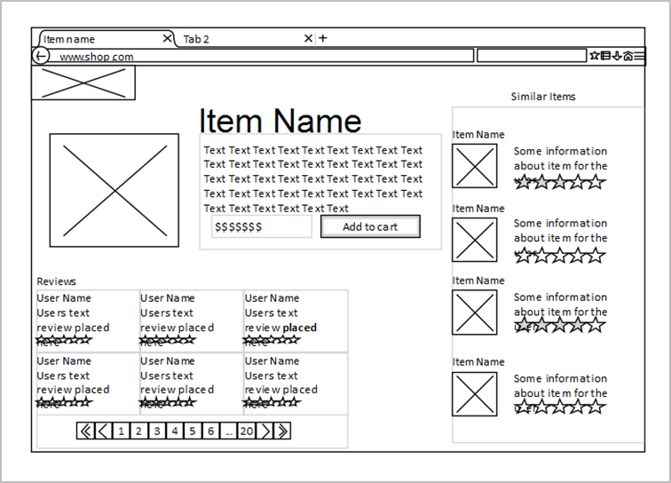

| Data Products - Analysis Authoring Guide (‘Rapid’ Methodology) | Approved v 1.0 - November 2017 |
Wireframe Modelling
Wireframes are a technique used to design a user-interface such as a website service at the structural level, or to investigate
their function. A Wireframe is commonly used to layout content and functionality for a page, taking into account user needs
and user journeys.
a wireframe model example
a wireframe model example
An example of a typical wireframe model
An example of a typical wireframe model
Wireframe Models are a collaborative technique that can be shared between the Business Analyst and a User-experience Designer.
|
Who After p in entry
|
Business Analysis, User Experience Designer, Product Owner.
After p in entry
|
|
Why
After p in entry
|
A wireframe helps validate look, usability and functionality of a proposed product.
Stakeholders and the product owner review wireframes to ensure that requirements and objectives are met through the design.
Business Analysts use wireframes to visually support the business rules and interaction requirements for a screen.
User experience designers and information architects use wireframes to show navigation paths between pages.
After p in entry
|
|
When After p in entry
|
Start early in Discovery Stage.
After p in entry
|
|
Duration
After p in entry
|
Ongoing activity.
After p in entry
|
|
What After p in entry
|
A wireframe is commonly used to lay out content and functionality on a page which takes into account user needs and user journeys.
Wireframes can be simply hand drawn, but can also be put together using software tooling. If the wireframes are going to be
used for a Prototype usability test, it is best the user experience designer creates them in HTML.
The business analysis can create basic wireframes based on user requirements and then work with user experience designers
to further improve the wireframes.
After p in entry
|
|
Outputs
After p in entry
|
Wireframe illustrations and/or Prototype.
After p in entry
|
|
Agile framework After p in entry
|
Industry standard.
After p in entry
|
| Related content:Wireframe Models (Concept)●Prototypes |
Wireframes in relation to Analysis Model Artefacts
Wireframes do not cover technical aspects of a product so they do need to be supported by artefacts such as requirements,
user stories, use cases and class models.
Wireframes can be use in conjunction with other artefacts such as scenarios and stakeholder business model to understand
a domain. The wireframes are displayed alongside the artefact to provide a visual traceability between artefacts.
NOTE: - At this time there are no formal Wireframe Artefacts defined for use according to the Analysis Methodology; however the
technique may be used at the discretion of the model author.
wireframes as part of analysis models

wireframes as part of analysis models
A Wireframe incorporated within an Analysis Model diagram
A Wireframe incorporated within an Analysis Model diagram
Screen shots can be included within analysis model diagrams or RTF documents to provide supporting information.
|
Copyright
© 2017 Health and Social Care Information Centre.
NHS Digital is the trading name of the Health and Social Care Information Centre. After p in entry
|